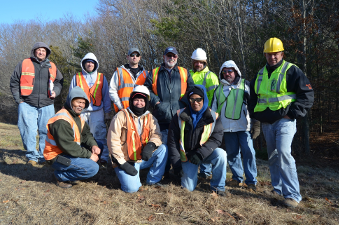
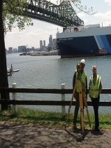
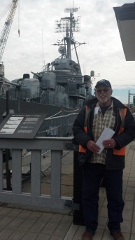

| Julia Brachanow President |
William Wahlefield, P.E., P.L.S. Chief Engineer |
| "WBE / DBE CERTIFIED" | |
- Extensive Experience on Highway and Bridges
- Prequalified by Architects and Engineers Review Board
- 100% Safety Record
- Proven Performance & Reliability
- Certified WBE and DBE
- Low Overhead
- Fully Insured $1,000,000
- OSHA and Railroad Safety Certified
- 5 Certified Survey Crews Available
Atlantic Engineering Associates, Inc. has been providing top quality land surveying and engineering services in Massachusetts for over 30 years. We utilize the latest technology and software to serve our clients in the most efficient and precise manner. We strongly believe in being honest and reasonable in our pricing. By maintaining low overhead costs; we are able to pass the savings on to our clients. We are fully licensed and insured.
Atlantic serves a wide range of clients including Government, Municipal, Commercial and Residential. Five of our survey crews are prequalified by Mass DOT for Engineering Field Survey Services. Atlantic has 20 years experience on bridges and highways under contract with the Commonwealth of Massachusetts. Atlantic is also prequalified by the Architects and Engineers Review Board. We are also WBE and DBE certified.
We have a 32 year history of very satisfied customers and are proud to note that we have NEVER failed to complete a job and have NO black marks on our professional record.
Because Safety is of utmost importance to us; all of our field personnel are OSHA certified and Railroad Safety certified. We also have a Hazardous Waste Certified team member. We can proudly say that we have a 100% safety record!
Our field and office staff have substantial professional experience and training. Education is a priority with Atlantic whereby employees are encouraged to continue their eduction through tuition incentives.
|  | |
|  |  |
CONSTRUCTION
- Preliminary Surveys - Highways and Bridges
- Construction Layout
- As Builts
RESIDENTIAL AND BUILDINGS
- Topographic Surveys
- Plot Plans
- Boundary Surveys
- Subdivision Surveys
- Stakeouts
- As Built Plans
- Waterways (Chapter 91) Licenses
- Condominium Site Plans
- Easement Plans
- ATLA Surveys
- Land Court Surveys
- Elevation Certificates (FEMA)
- Railroad Location Surveys
ENGINEERING
- Existing Conditions - Surveys
- Hydrographic - Surveys
Highway and Bridge Layout Projects
| Winthrop | Saratoga Street / Belle Isle Bridge |
| Andover | River Road over Rte 93 Bridge |
| Boston/Cambridge | Larz Anderson Bridge |
| Needham/Dedham | Rte 95 Add A Lane Bridge and Roadway |
| Cambridge/Arlington | Rte 2 / Alewife Brook Parkway Bridge |
| Chelsea | Eastern Avenue Roadway |
| Peabody/Middleton | Bike Path Middleton to Rte 95 |
| Peabody | Rte 1 Jughandle Roadway |
| Somerville | Assembly Square Roadway |
| Lynnfield/Wakefield | Walnut, Audubon and Salem Streets Rte 95 Roadway |
| Woburn | Winn St. Roadway |
| Medford | Roosevelt Circle Bridge |
| Woburn | Commerce Way/ Rte 93 Bridge Hazardous Waste Site |
| Boston | Morton St. Railroad Bridge |
| Milton | Adams St. Bridge |
| Weymouth | Columbia St. Bridge |
| Boston | Congress St./ Fort Point Channel Bridge |
| Boston/Everett | Alford Street Bridge over Mystic River |
| Canton | High St. Railroad Bridge over Amtrak |
| Wellesley | Washington Street/ Rte 9 Bridge |
| Randolph | Union Street Roadway |
| Wellesley | Rockland St Railroad Bridge over Conrail |
| Boston | Cambridge St. Roadway |
| Weston | Recreation Road Bridge |
| Quincy | Hancock Street Roadway |
| Weymouth | Rte 18 Roadway |
| Peabody | Rte 1 / Lowell St. Bridge |
| Quincy | Adams Green Roadway |
| Boston | Cambridge St./I 90 Bridge |
| Somerville | School, Walnut and Sycamore Sts. Railroad Bridges |
| Beverly | Cabot, Dodge and Enon Sts. Roadway |
| Revere | Beach St. Bell Circle Railroad Bridge |
| Chelmsford | Rte 3A Railroad Bridge |
| Revere | Revere St. Railroad Bridge |
| Revere/Saugus | Rte 107 Highway Bridges (3) |
| Waltham/Weston | South St./River Rd. Bridge |
| Everett | Tileston St. Railroad Bridge |
| Saugus | Hamilton St. Bridge |
| Saugus | Walnut St. Roadway |
| Waltham | Rte 20 / Rte 95 Bridge |
| Wakefield | Meriam St. Railroad Bridge |
| Hamilton | Rte 1A, Asbury and Walnuts Sts. Roadway |
| Wakefield | North Avenue Roadway |
| Waltham | Winter St./ Rte 95 Bridge |
| Middleton | Boston St. Bridge |
| Marblehead | Vinnin St. Roadway |
| Belmont | Rte 60 Roadway |
| Revere | Park Avenue/Central Avenue Roadway |
| Lynn/Saugus | Boston St. Bridge over Saugus River |
| Revere | Tide Gates/ Town Line Brook/ Culvert |
| Revere | Prospect, Spring, Fenno Sts. Roadway |
| Somerville | Somerville Avenue Roadway |
| Ipswich | Rte 1A/ High Street Bridge |
| Lynnfield/Wakefield | Rte 95 Noise Barrier |
| Malden/Medford | Commercial St./Corporate Way Roadway/Culvert |
| Braintree | Wood Rd. Salt Storage Facility |
| Revere | North Shore Road Tide Gates |
| Burlington | Middlesex Turnpike Roadway |
| Concord/Lincoln | Rte 117/Sudbury River Bridge |
| Wellesley | Woodlawn St. Bridge |
| Newburyport | Bike Path |
CONTACT US TODAY ...
PHONE: 978-979-7544
FAX: 978-664-1855
OR
EMAIL: julia@atlantic-ma.com
Fully insured to $1,000,000.00
Fully Licensed
Atlantic Engineering is a family based business that takes a personal interest in all of our employees.
Some of our benefits include:
- Health Insurance
- Vacation
- Personal/Sick
- Holidays
- Tuition Reimbursement
Please revisit this site to check on job openings or send us your resume. We will keep it on file and contact you when an opening becomes available.
Requirements:
- Valid Drivers License
- Experience operating a total station and data collector
- Experience working with G.P.S. receivers, AutoCAD and Carlson are a plus.
- Commitment to following safe procedures